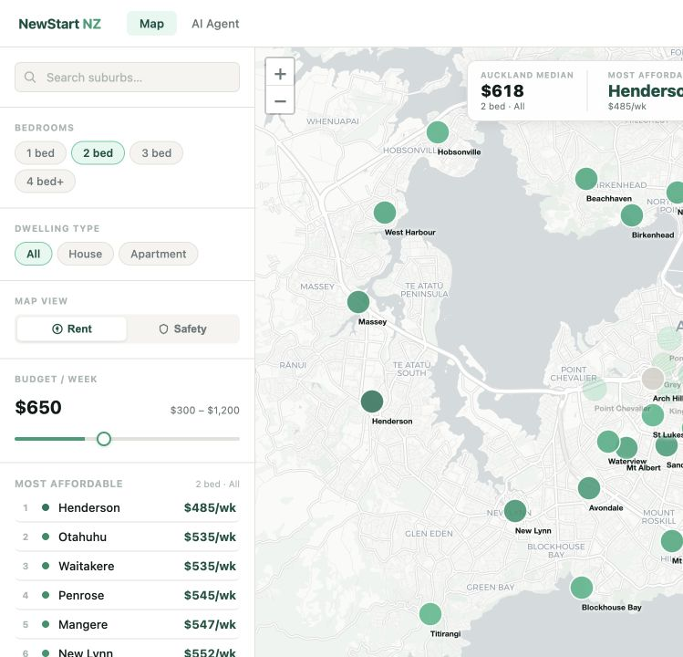

Featured · Civic data and frontend
NewStart NZ
An Auckland housing and safety guide that lets newcomers weigh rent against crime data when choosing where to live.
MBIE and NZ Police publish useful data, but their geographic boundaries do not match each other or the suburb names people actually use. I built a reconciliation layer that folds both source systems into one understandable model, then made the results explorable on a Leaflet map.

MBIE rent areas
556 source regions
Police areas
416 source regions
Shared model
63 Auckland suburbs
- DataMBIE Market Rent API v2 and 2025 NZ Police statistics
- Coverage59 suburbs with rent data, 61 with crime data
- FrontendSingle-file HTML, Leaflet, filters, budget and ranked views
- JudgmentMissing data is labelled instead of silently filled with zero